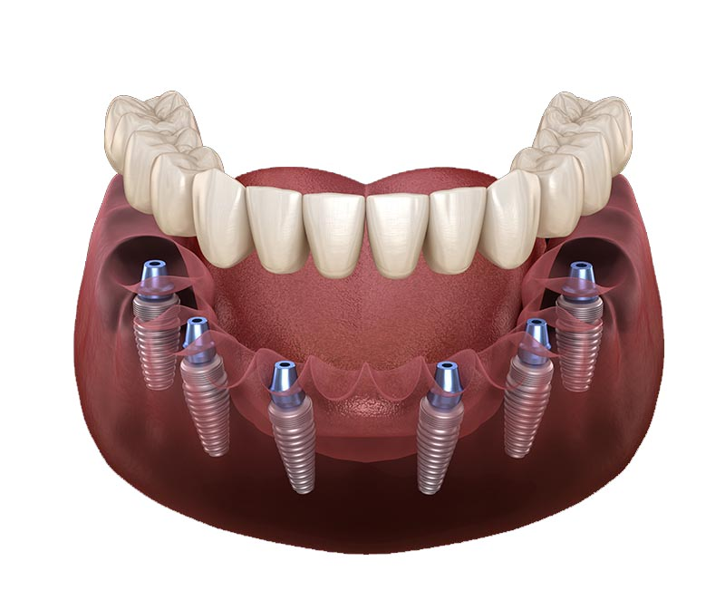
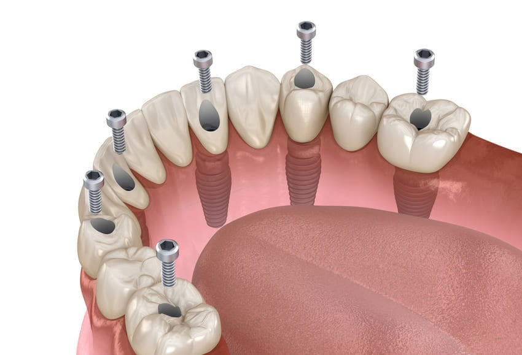

English
English
All On Four - All On Six – Dental İmplant Fiyatları İstanbul
All on four tekniği nedir? All on 4 implant nedir?

All On Four tekniği, 20 yıldan bu yana uygulanan ve bilimsel anlamda başarılı sonuçlar vadeden güvenli bir implant tekniğidir. Yaş almış hastalar başta olmak üzere dişlerini çeşitli nedenlerden dolayı kaybetmiş ve kemik erimesi olan hastalar için uygulanan sağlıklı bir yöntemdir All On Four tekniği sayesinde her diş için ayrı implant işlemi yapmaya gerek kalmadan, çenenin arka ve ön kısmına ikişer adet olmak üzere yerleştirilen toplam dört implant kullanılır ve diş protezi bu implantların üzerine yerleştirilir. Tedavi süresi bir yıla kadar sürebilen standart implant tekniğinde ileri cerrahi müdahalelere gerek duyulabilir ve maliyeti yüksektir. Bu süre zarfında hasta uzun süre dişsiz kalabilir. All On Four implant tekniği ise bir günde, tek bir cerrahi müdahale ile geçici sabit diş protezini yerleştirerek hızlıca uygulanabilir ve iki ila üç ay içerisinde hastaya kalıcı sabit dişleri takılır. Bu sayede hastalar tedavi süresince dişsiz kalmaz. All On 4 implant uygulaması, standart implant tekniğine kıyasla hastalar için daha düşük bir maliyete sahiptir.
All on four implant diş tedavisi nasıl yapılır?
- All On Four implant tekniği, uzman diş hekimi tarafından röntgen, bilgisayarlı tomografi gibi tıbbi görüntüleme tetkikleri yapıldıktan ve ölçü alındıktan sonra hastaya uygulanır.
- Hastanın alınan ölçüsüne uygun olarak laboratuvarda geçici protezleri tamamlanır.
- All On Four implant tedavisi uygulanırken hastaya lokal anestezi verilir. Hastanın yaşayacağı stres, heyecan, korku vb. durumlarda lokal anestezi öncesi hastaya gülme gazı olarak bilinen Nitrous oxide verilerek rahatlaması sağlanır, bu gaz yan etkisiz ve çocuklarda bile kullanılacak seviyede tehlikesiz bir gazdır.
- Hastanın müdahale gerektiren dişleri (çürük, sallanma vb.) varsa çekildikten sonra implantlar çenesine yerleştirilir.
- Hastadaki köprüler ve kronlar, yerleştirilen bu implantlara sabitlenir.
- Hastanın çenesine yerleştirilen toplam dört dental implantın çeneyle kaynaşması ve tamamen iyileşmesi için 3 ila dört ay beklenir.
- 3 ila dört aylık iyileşme süresinden sonra gerekli kontroller yapılarak kalıcı diş protezleri yerleştirilir ve tedavi tamamlanır.
All on four implant tedavisi sonrası nelere dikkat etmek gerekir?
- Tedaviden sonra 24 saat içerisinde kanlı tükürüğe rastlanabilir, bu aşamada ağzı çalkalamamaya ve tükürmemeye dikkat edilmelidir
- All On Four implant tedavisi sonrasında 2 saat boyunca herhangi bir şey yenilip içilmemelidir.
- Tedaviden sonra ilk 24 saat içerisinde sızıntı şeklinde kanama yaşanabilir, bu durumda tampon yapılması önerilir.
- Tedaviden sonra ilk 24 saat içerisinde çene hareketleri sınırlanmalı, olabildiğince az konuşulmalıdır.
- All On 4 implant tedavisi işleminden sonra 36 saat boyunca dişler fırçalanmamalıdır.
- All On Four implant işleminden 36 saat sonra günde ortalama iki defa doktor önerisiyle alınan gargara kullanılmalıdır ve gargaradan en az 2 saat sonrasına kadar hiçbir şey tüketilmemelidir.
- Yapılan işlemden sonra oluşabilecek şişliklere ve morarmalara karşı baş altına yastık konularak boyun ve kafa kısmı yükseltilmelidir.
- Tedaviden sonra ilk 24 saat içerisinde sigara ve alkol tüketilmemelidir. Sigara, iyileşme sürecini ciddi oranda yavaşlatacağından dolayı tedavinin bitimine kadar kullanılmaması önerilir.
- Yapılan işlem bölgesinde şişlik oluşması halinde buz tedavisi uygulanmalıdır.
- All On Four implant işleminden sonra oluşabilecek hassasiyetler dolayısıyla soğuk-sıcak içecek ve yiyeceklerden kaçınılmalıdır.
- Tedavi olan hastalar, uzman diş hekiminin yazdığı reçeteye dikkatle uymalı ve kontrollerini aksatmamalıdır.
- Hastalar, iyileşme sürecini tamamlayana kadar yüzlerine herhangi bir darbe almamaya özen göstermelidir..
- All On Four implant tedavisi uygulanan hastalar, yerleştirilen dental implantlara zarar vermemek adına 3 veya 4 aylık geçici protez diş döneminde sert yiyeceklerin tamamından uzak durmalıdır. Bu süreç boyunca yumuşak gıda diyeti yapan hastalar, kalıcı protez dişleri takıldıktan sonra normal beslenme alışkanlıklarına rahatlıkla dönebilir.
- Hastalar, All On Four implant tedavisi ile ilgili herhangi bir sorun yaşar veya danışmak isteyeceği konular olursa uzman diş hekimlerimiz ile iletişime geçmelidir.
All on four tedavisinin avantajları nelerdir?

- All On Four implant işlemi, standart implant işlemlerine kıyasla çok daha kısa sürer.
- Diğer tedavi yöntemlerine kıyasla başarı oranı çok yüksek bir tedavi yöntemidir.
- Tedavi, hastaya özel ve uygun olacak biçimde titizlikle yürütülür.
- Hasta, All On 4 tedavisinin başından sonuna kadar hiçbir aşamada dişsiz kalmaz.
- All On Four tedavisi ile yerleştirilen implant ve kalıcı protez dişler uzun ömürlü bir kullanım sunar.
- Hastalar, tedavinin ilk 3 ila 4 ayı boyunca geçici protez diş kullanırlar. İyileştikten sonra kalıcı dişler, aynı gün protez dişler yerine takılır. Böylece hastalar dişsiz kalmadan tedavi sürecini tamamlar.
- Dişsizlik vakalarında, standart implant işlemlerine göre maliyeti daha düşük bir tedavi yöntemidir.
- All On Four implant tekniği ile hastalar, bir günde ve tek bir cerrahi müdahale ile diş protezine sahip olur.
- All On 4 tedavisinde, implantlar çene kemiğinin güçlü olan kısımlarına, uygun açılarla yerleştirilir. Bu sayede hastanın çene ve kemik yapısına zarar vermez.
- Çeşitli nedenlerden dolayı hareketli diş protezlerini kullanamayan hastalar için önerilen bir tedavidir.
- Yapılan işlem sonrasında hastalar; vurma, ağrı, batma vb. sorunlarla karşılaşmaz
- All On Four uygulaması, hastanın damağını kaplamadığı için damak protezleriyle karşılaştırıldığında kullanım yönünden kolaydır ve alışma süreci gerektirmez.
- All On Four tedavisinde yerleştirilen protez dişlerin temizliği kolaylıkla yapılabilir.
- Arka diş bölgesindeki kemik yapısında bozukluk olan hastalar bu tedavi yöntemini güvenle yaptırabilir..
- All On Four tedavisinde implantlar açılı bir şekilde yerleştirildiği için kemik greftine gerek kalmaz ve bu sayede tedavi süresi uzamaz.
- Arka diş grubunda kemik deformasyonu bulunan hastaların, sabit dişlere sahip olması için önerilen bir tedavi yöntemidir
- All On Four tedavisi hastanın estetik kaygıları, tat alma duyusu ve diş fonksiyonları dikkate alınarak uygulanır. Hastanın özgüven kaybı yaşamasına neden olmaz.
- Diğer tedaviler ile kıyaslandığında All On Four tedavisi sonrası ihtiyaç duyulacak seans sayısı azdır. Şehir dışında veya yurt dışında bulunan hastaların sıkça seyahate çıkmasına gerek kalmaz. Zamanı dar olan hastalar için oldukça uygundur.
İstanbulda all on four implant diş yaptırmanın dezavantajları nelerdir?
- Standart implant köprülerine göre daha ağır ve kalın protez malzemeler kullanılır.
- Protezin altında bulunan hava ve sıvı geçişi nedeniyle bazı hastalarda konuşurken “tıslama” problemi ortaya çıkabilir.
- Çenede bulunan azı dişlerinin en çok ısırma kuvveti uygulayabileceği bölgede implant bulunmaz.
- Yerleştirilen implantların üzerine yeteri kadar beklenmeden sabitlenen protez dişler düşük ihtimal dahilinde de olsa implant kaybına yol açabilir.
- All On Four tedavisinde yerleştirilen implantların birinde problem oluşması veya implantlardan birinin kaybedilmesi durumunda çenedeki bütün protez etkilenebilir ve çene protezi işlevselliğini yitirebilir. Böyle bir durum söz konusu olduğunda tedavinin baştan yapılması gerekebilir.
All on four implant tekniği kimlere uygulanabilir?
All On Four implant tekniği; ergenlik dönemini tamamlayan, dental implant tedavisini engelleyecek ciddi bir rahatsızlığı bulunmayan, çenesinde tedaviye uygun kemik hacmine sahip olan ve dişlerini tamamen kaybetmiş her hasta için güvenle uygulanabilecek bir tekniktir.
İstanbul all on four hakkında sık sorulan sorular
All on four implant diş bakımı kolay bir şekilde yapılır. Tedaviden sonra çok büyük bir öneme sahip olan implant bakımı için ince, yumuşak kıllı fırça ve diş ipi kullanılması tavsiye edilir.İyileşme sürecinde olan hastaların yumuşak gıda diyetini uygulaması gerekir.
All On Four implant fiyatları, hastaya ve işlemi yapacak doktorun uzmanlığına bağlı olarak değişkenlik gösterebilir. Uzman diş hekimimizin yapacağı detaylı ön muayene sonrası belirlenebilecek olan tedavi fiyatı; kullanılacak malzemelerin kalitesi, miktarı, tercih edilen markanın mevcut kur üzerinden izlediği fiyat politikası, diş sayısı ve yapılacak cerrahi müdahalelere göre farklılık gösterebilir. All On 4 tedavisi ile ilgili bilgi almak için bizimle iletişime geçebilir, ön muayenenizi olmak için kliniğimizi ziyaret edebilirsiniz.
All On 4 implant tedavisi lokal anestezi işlemi doğrultusunda gerçekleştirilir. Bu yüzden işlem esnasında herhangi bir ağrı hissedilmez. İşlem sonrasında ağrı hissedilirse uzman diş hekiminin size tavsiye ettiği ağrı kesicilerle bu durumun önüne geçilebilir.
All On Four implant işleminde, her diş operasyonunda olduğu gibi hafif ağrı ve şişlikler görülebilir. Buz tedavisi uygulanarak ve uzman diş hekiminin verdiği reçetedeki ilaçları kullanarak bu problemlerin önüne geçilebilir.
All on four implantlar, standart implantlardan farklı olarak dört vida yardımı ile açılı şekilde çeneye yerleştirilir. Standart implant işlemlerinde vidalı diş sayısı oldukça fazladır, bu da zaman ve maliyet yönünden dezavantajdır. Standart implant işlemlerinde 6 ila 12 aylık bir süreye ihtiyaç duyulurken All On Four implantlarda geçici protez bir günde takılabilir ve kalıcı protezle aynı seansta değiştirilebilir. Bu da standart implant işlemlerinde görülen dişsiz kalma gibi olumsuz durumları ortadan kaldırır.
All on four implant tedavisi; 20 yıldan uzun süredir kullanılan, bilimsel olarak güvenirliğini ve başarısını kanıtlamış bir tedavi yöntemidir.
All on four tedavisinde kullanılan implantlar ve protezler zirkonyum, akrilik ve porselen gibi maddelerden yapılarak elde edilir.
All on 4 implant ve protezler uzun ömürlüdür. Diş hekimi kontrolleri ve doğru diş-protez bakımıyla bu implant ve protezleri 10 ila 15 yıl arasında kullanmak mümkündür.
Uzman diş hekimlerinin doğru ve kaliteli malzemelerle klinik ortamında yaptığı hiçbir dental işlem çeneye, kemiğe, diş etine ve dişe zarar vermez. Fakat tecrübe sahibi olmayan kişilerin kalitesiz malzemelerle gerçekleştireceği işlemler ciddi sağlık problemlerine yol açabilir.
All on four ve All on six implant teknikleri, daha güvenli ve ideal olduklarından dolayı standart dental implant tekniklerine alternatif olarak geliştirildi.
All on Six tekniği üst ve alt çenede, açı ve destek yönünden hassasiyetle belirlenen noktalara altı adet diş implantı yerleştirilerek uygulanır. All on four tekniği ise dört adet implant hastaların üst ve alt çenelerine, ikisi önde ikisi arkada olmak üzere belirli açılarla yerleştirilerek uygulanır.
All on four ve All on six, kullanılan implant sayısı dışında birbirine yakın tedavi yöntemleridir. Diş eksiği daha fazla olan hastalar için ve All on 6 tedavisi önerilir. All on 4 tedavisinden sonra nadiren de olsa bir implantın tutmaması ve dişin sallanması diğer dişleri de etkileyebilir.
All on four ve All on six tedavilerinin avantajları hastadan hastaya farklılık gösterebilir. Ağız anatomisi ve dişlerin durumu göz önünde bulundurarak uzman diş hekimi hastaya uygun tedavi yöntemini belirler.
All On Four ve All on six arasındaki en büyük fark, All on six’in daha uzun ömürlü ve dayanıklı olmasıdır. İmplantlar ne kadar fazla kullanılırsa dişler dayanıklı ve stabil duruma gelir. All on four tedavisinden sonra çenedeki kemik erimesine bağlı olarak gelişen sallanma, diğer dişleri de etkileyebilir. Bu durum da tedavinin yenilenmesini gerektirebilir. All on six tedavisi ise ömür boyu müdahale gerektirmeyen, uzun vadeli bir tedavidir.
All on sıx – All on 6 nasıl yapılır? Avantajları nelerdir? All on six implant fiyatları nedir?
All on six tekniği nedir? All on 6 implant nedir?
All on six diş implantı, birbirinden farklı sebepler dolayısıyla görülen dişsizlik vakalarında uygulanan ve uzun ömürlü çözümler sunan bir tedavidir. Alt ve üst çenede, arka veya ön diş gruplarındaki eksik dişler, All on 6 dental implant işlemiyle tamamlanır. Ayrıca mevcut dişlerini estetik ve sağlamlık açısından yenilemek isteyen hastalara da uygulanabilir. All on Six diş protezi, diğer protezlerle göre çok daha sağlam ve stabildir.
All on six diş implantına kimler ihtiyaç duyar?
All on six diş implantı, birbirinden farklı sebepler dolayısıyla görülen dişsizlik vakalarında uygulanan ve uzun ömürlü çözümler sunan bir tedavidir. Alt ve üst çenede, arka veya ön diş gruplarındaki eksik dişler, All On 6 dental implant işlemiyle tamamlanır. Ayrıca mevcut dişlerini estetik ve sağlamlık açısından yenilemek isteyen hastalara da uygulanabilir. All on six diş protezi, diğer protezlerle göre çok daha sağlam ve stabildir.
All on six diş implantının avantajları nelerdir?
- All on six işlemi, standart implant işlemlerine göre çok daha kısa sürede tamamlanır.
- Kemik hacmine sahip olmayan veya çene kemiği deforme olan hastalara dahi uygulanabilir, nadiren de olsa kemik grefti gerektirebilir.
- Doğal, sağlam ve estetik açıdan güzel görünen dişler sunar.
- Hastalara daha genç ve dinamik bir görüntü kazandırır.
- İyileşme süresi diğer tedavi yöntemlerine kıyasla çok daha kısadır.
- Hasta, All On 6 tedavisinin başından sonuna kadar hiçbir aşamada dişsiz kalmaz.
- Hastaya takılan geçici protez, sabit protezi hazır olduğunda değiştirilerek tek seansta yerleştirilir.
- All On Six dental implant tedavisinden sonra hasta, diş işlevselliğini yeniden kazarak yeme, içme, ısırma ve çiğneme eylemlerini rahatlıkla yerine getirebilir.
- All on 6 çok uzun ömürlü ve sağlamdır, sonradan tekrar müdahale gerektirmeyen kalıcı bir çözümdür.
- All on six dental implant tedavisinde, diğer implant tedavilerinde uygulanan ileri cerrahi işlemlere gerek duyulmaz.
- Temizliği ve bakımı kolaydır.
- Diş eksikliklerine bağlı olarak gelişen konuşma bozukluğunu ortadan kaldırır.
- All on 6 tedavisinde, tek seansta ve tek cerrahi işlemle çözüm sunulur. İmplantlar alt ve üst çeneye derinlik, açı ve mesafe belirlenerek yerleştirilir. Çeneniz yeniden yapılandırılır ve stabilite kazanır.
All on six diş implant tedavisinin aşamaları nelerdir? Nasıl yapılır?
All on six dental implant prosedürünün hazırlığı
All on six implant tedavisine başlamadan önce uzman diş hekimlerimiz tarafından ön muayene yapılır. Tıbbi görüntüleme metotları kullanılarak muayene tamamlanır ve hasta için özel olarak hazırlanacak protez için hassas bir şekilde ağız ölçüsü alınır. Hastanın kullandığı ilaçlar, mevcut rahatsızlıkları ve alkol, sigara kullanımı gibi durumlar tedaviden önce detaylıca gözden geçirilir. All On 6 dental implant işleminde, üst ve alt çenede açı ve destek yönünden hassasiyetle belirlenen noktalara altı adet diş implantı yerleştirilir. Yerleştirilen implantların çene kemiğinden destek alması oldukça önemlidir. All On Six uygulaması kemik grefti gerektirmez. Fakat kemik hacmi taramalarından sonra çene kemiğinde deformasyon tespit edilirse kemik grefti tekniği kullanılarak da tedaviyi uygulamak mümkündür.
All on six diş tedavisinde 3D modelleme
All On Six implant tedavisine başlamadan önce uzman diş hekimlerimiz tarafından bilgisayar ortamında 3D modelleme yapılarak hastanın ölçüleri alınır ve hazırlanacak sabit protez için laboratuvara gönderilir.
All on 6 diş tedavisinde implantasyon
All on 6 diş implantı işlemi hastaya lokal anestezi verilerek yapılır. Hasta, işlem esnasında herhangi bir ağrı hissetmez. Hastanın göstereceği aşırı stres, korku ve endişe gibi reaksiyonlarda bu işlem öncesi hastayı rahatlatmak için gülme gazı olarak tabir edilen Nitrous Oxide verilir. All On Six implant işlemi, her çene için yaklaşık olarak 2 ila üç saat arası sürer. Tedavinin gerektireceği bütün işlemler aynı gün içerisinde yapılabilir. Altı adet diş implantı, ön bölgeye 90 derece, arka bölgeye 45 derece açıyla olacak şekilde yerleştirilir.
All on 6 tedavisinde protez yerleştirme
Bütün bu işlemlerin hemen ardından hasta için hazırlanan geçici protez yerleştirilir. Geçici protez takılarak, yerleştirilen implantların kemikle kaynaşması ve hastanın iyileşmesi beklenir, bu sayede hastalar tedavinin hiçbir aşamasında dişsiz kalmaz. Yaklaşık 3-4 aylık bir iyileşme süresinden sonra gerekli kontroller yapılır ve kalıcı protez tek seansta yerleştirilir.
All on six dental implant tedavisinden sonra iyileşme süresi ne kadardır?
All on six dental implant tedavisinden sonra hasta hafif ağrılar veya rahatsızlıklar yaşayabilir. Uzman diş hekiminin, hastanın tedavisine ve şikayetlerine uygun olarak verdiği antibiyotik ve ağrı kesiciler sayesinde bu problem ortadan kaldırılır. İyileşme süresi boyunca diş hekiminin tavsiye ettiği gargarayı kullanarak ağız bakımı yapılmalı ve yeme-içme alışkanlıklarına dikkat edilmelidir.
All on six hakkında sık sorulan sorular
All on 6 implant tedavisi fiyatları hastadan hastaya değişiklik gösterebilir. Uzman diş hekiminin yetkinliği, kullanacağı malzemelerin miktarı ve tercih edilen malzeme markalarının o günkü kur seviyesi üzerinden izlediği fiyat politikaları All On Six tedavisinin maliyetini belirlemektedir. Fiyatlandırmadaki bütün bu detaylara rağmen All On Six implant tedavisi, standart implant tedavisine kıyasla fiyat olarak çok daha uygundur. All On Six tedavisi ile ilgili detaylı bilgiye sahip olmak için bizimle iletişime geçebilir, ön muayeneniz için kliniğimizi ziyaret edebilirsiniz.
All on six diş implant tedavisi, her çene için 2 ila 3 saat sürer. Bu süre hastanın durumuna göre değişiklik gösterebilir. Hastalar, aynı gün içerisinde yerleştirilen geçici protez ile hiç dişsiz kalmadan gündelik hayatlarına dönebilir. 3 ila 4 aylık bir iyileşme süresinin ardından geçici protezler çıkarılarak kalıcı protezler tek seansta hastaya yerleştirilir.
All on six diş implantı tedavisinde, ağız ve diş bakımı oldukça büyük önem arz eder. Tedavinin uzun vadeli olması için ağız hijyenine dikkat ederek bakteri ve plak oluşumunun önüne geçilmeli, yumuşak başlıklı fırçayla dişler günde iki defa fırçalanmalı ve diş ipi kullanılmalı. Doğal dişler için geçerli olan tüm bakım uygulamaları, All On Six diş implantları için de geçerlidir.
All on six tedavisi, başarı oranı çok yüksek ve güvenli bir tedavi yöntemidir. Ağız ve diş bakımına özen gösterilmesine de bağlı olarak uzun yıllar boyunca kullanılabilir. Uygulanan tedavinin başarı oranı aynı zamanda tedaviyi yapan doktorun uzmanlığı ile de ilişkilidir.